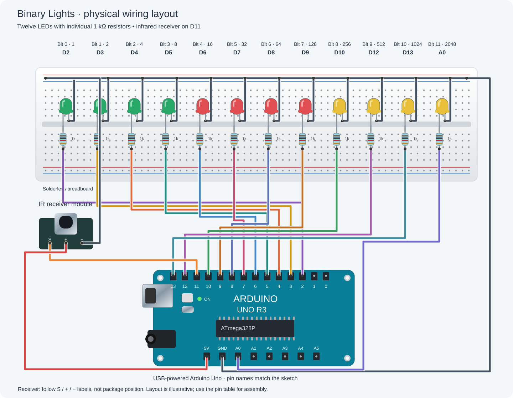

Arduino: Binary Lights
A connection guide based on the project’s Arduino sketch and build photo. Signal pins match the code; suggested component values and details hidden in the photo are called out below.
AI assistance: This wiring diagram was created using artificial intelligence, based on the project’s code and reference photograph.

Pin connections
| Pin / source | Connect to |
|---|---|
| D2 | Bit 0 · 1 → resistor → LED anode |
| D3 | Bit 1 · 2 → resistor → LED anode |
| D4 | Bit 2 · 4 → resistor → LED anode |
| D5 | Bit 3 · 8 → resistor → LED anode |
| D6 | Bit 4 · 16 → resistor → LED anode |
| D7 | Bit 5 · 32 → resistor → LED anode |
| D8 | Bit 6 · 64 → resistor → LED anode |
| D9 | Bit 7 · 128 → resistor → LED anode |
| D10 | Bit 8 · 256 → resistor → LED anode |
| D12 | Bit 9 · 512 → resistor → LED anode |
| D13 | Bit 10 · 1024 → resistor → LED anode |
| A0 | Bit 11 · 2048 → resistor → LED anode |
| GND | All 12 LED cathodes (−) |
| D11 | IR receiver signal / OUT / S |
| 5 V | IR receiver VCC / + |
| GND | IR receiver GND / − |
Build notes
- The photo shows twelve LEDs (four green, four red, four yellow), individual series resistors, and an IR receiver module.
- The diagram follows
ledPins[] = {2, 3, 4, 5, 6, 7, 8, 9, 10, 12, 13, A0}. D2 is bit 0 (value 1); A0 is bit 11 (value 2048). A0 is used as a digital output. - Each output connects through its own resistor to an LED anode (+); the cathode (−, usually the shorter lead/flat side) connects to GND. Use 1 kΩ per LED as a conservative suggested value for simultaneous operation; the exact resistor values in the photo are not confirmed.
- Connect the IR receiver signal to D11, its supply to 5 V, and its ground to GND. Follow the module’s printed S / + / − labels; physical pin order varies by module.
- Join the breadboard ground rails to the Uno GND. Keep D11 free for the IR receiver; it is intentionally absent from the LED array.
Reference sketch: BinaryLights.ino. Disconnect USB power while changing connections.